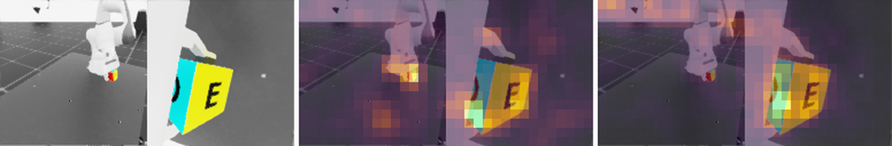
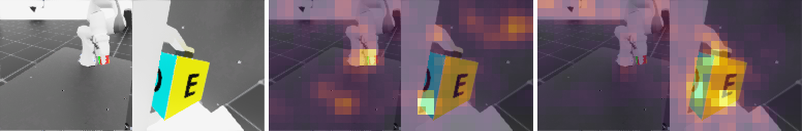
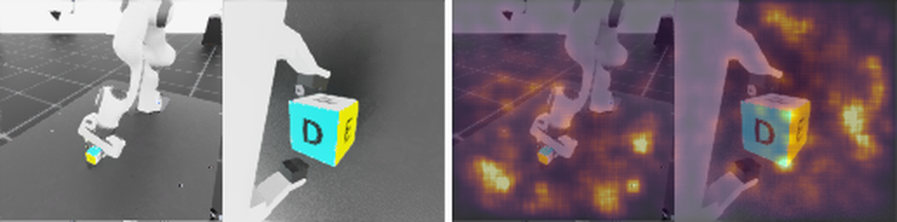
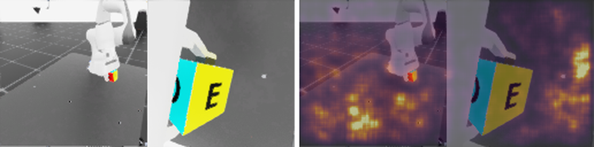
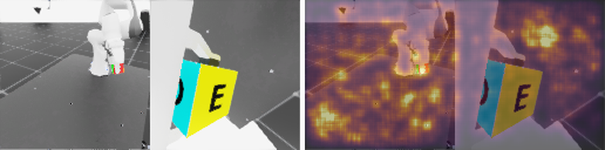
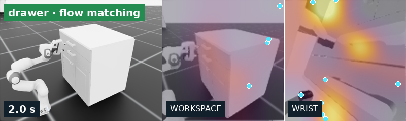
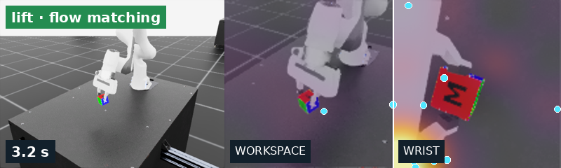

Lift
Pick up the cube and carry it to the goal. Franka Panda, 50 Hz.
Same network, data and recipe in Isaac Lab; only the training objective and the sampler differ. Flow matching is ahead on lift and on pouring at 5 steps, ties on the drawer, and shows no measurable difference on stacking.
+15 points over seeds 1001-1003 (3 × 200 episodes). Flow matching also reaches 66.0 % with a single Euler step (seed 1001).
Flow at 5 steps matches diffusion at 50 steps (57.0 vs 51.5 %, within about 1 SE, one seed) with a tenth of the network calls. Task-stage success, no liquid measured.
Both match their scripted teacher (90.5 %). With a jerky PPO teacher the student reaches only 8.7 %.
10.9 vs 9.3 % on seeds 1002-1005. DAgger round 2 lifts diffusion to 42.1 %; the teacher is at 94.0 %.
Success rates on held-out episodes. Each model is a single training run per task, so small gaps are not meaningful; the lift and 5-step pouring gaps are far outside the standard errors (the pouring gap may partly come from the diffusion sampler grid, see Few steps).
| Task | Diffusion | Flow matching | Reading |
|---|---|---|---|
| Stacking, demos only10 steps, 3 × 200 | 10.2 %8.0 / 9.0 / 13.5 | 7.3 %6.0 / 10.0 / 6.0 | both low; no measurable difference (10.9 vs 9.3 % on seeds 1002-1005) |
| Drawer10 steps, 3 × 200 | 92.2 % ± 1.1 | 92.3 %95.0 / 90.5 / 91.5 | tie |
| Lift10 steps, 3 × 200 | 62.8 %63.0 / 66.0 / 59.5 | 78.2 %77.0 / 78.0 / 79.5 | flow +15 points |
| Pouring5 steps, 200 episodes; task-stage success, no liquid measured | 27.5 % | 57.0 % | flow +29.5 points (diffusion 5-step grid starts at t = 80, see Few steps) |
| Pouring10 steps | not measured | 50.0 % | |
| Pouring50 steps | 51.5 % | 41.5 % | diffusion ahead at 50 steps (within about 1 SE) |
Swipe the table sideways to see all columns.
Success on held-out seeds, with the per-seed values under each pooled rate. SE = sqrt(p(1-p)/n). Source: report/RESULTS.md.
Training: stacking, drawer and lift 30k steps from scratch each (lift: both objectives from scratch on the same zoom demos, so these lift numbers are lower than the earlier fine-tune-chain lift policies). Pouring flow: 80k steps on demos_lag400 and demos_lag800b, the recipe of the diffusion bc_lag1200. The 27.5 % diffusion pouring number uses the checkpoint's own 5-step DDIM schedule; the evaluation file does not record it.
The policy reads two past frames (workspace and wrist camera) and the joint state, and writes a 16-step chunk of actions; the first 8 run, then it plans again. Both models use the same network code. They differ in what the network is trained to predict and in how a chunk is sampled.
The same network for both objectives (Franka tasks).
Lift, drawer, stacking: both models at 10 calls. Pouring: flow at 5 (57.0 %), diffusion at 50 (51.5 %). Flow reaches 66.0 % on lift with 1 call.
Mean squared error of the sampled first 8 actions against held-out lift demos, best checkpoint of the lift pair (dp_lift, fm_lift, one run each): diffusion 0.0140, flow matching 0.0079.
Two past frames in, 16 steps out, 8 run, then the policy plans again. Pouring: 32 predicted, 16 executed.
Grey boxes are the same code in both models; orange boxes differ. On a phone, scroll the diagram sideways or tap it to open it full size.
Training. Add noise to a demo chunk at an integer time t in 0..99 (cosine schedule). The network predicts the noise; the loss is the mean squared error to it.
Sampling. DDIM with eta 0 over t = 90, 80, …, 0 (10 network calls), with the x0 estimate clipped to ±1 at every step.
Grey boxes are the same code in both models; teal boxes differ.
Training. Draw t uniformly in (0, 1) and blend: xt = (1 − t) · noise + t · action. The network predicts the velocity action − noise. The time input is t × 100, a float.
Sampling. Euler with k steps, x ← x + v/k at t = i/k, clamped to ±1 only at the end. Here t = 0 is noise; for diffusion, t = 99 is noise.
pouring_diffusion/dp_core/model.py)train_dp.py); 30,000 steps, batch 128, identical for both.FlowPolicy is a subclass of DiffusionPolicy that overrides only two methods: the loss and the sampler (pouring_diffusion/dp_core/flow.py 19-35 against model.py 166-198).| Item | Value |
|---|---|
| Image per step | workspace and wrist cameras, 128 × 128 each, side by side (128 × 256) |
| Joint state | 18 numbers (drawer), 21 (lift); normalised, clipped to ±5, Linear to 256 |
| Timestep embedding | sinusoidal 256, MLP 256 → 1024 → 256 (Mish) |
| Transformer | pre-norm, GELU, feed-forward 1024, dropout 0; the decoder self-attends over 16 action tokens and cross-attends to the memory |
| Chunk | predict 16 steps × 8 values, execute the first 8 |
| Diffusion | 100 training timesteps, cosine schedule, noise prediction, MSE; DDIM eta 0, 10 sampling steps, x0 clipped |
| Flow matching | xt = (1 − t) noise + t action, t ~ U(0,1), velocity target action − noise, MSE; Euler with k steps, clamp to ±1 |
| Training | AdamW lr 1e-4, 500 warm-up steps then cosine decay, weight decay 1e-4, batch 128, grad clip 1.0, bf16, EMA 0.999, 30,000 steps (pouring 80,000) |
| Pouring variant | same code, two arms (7 + 7 action values), 32 steps predicted, 16 executed, 5 sampling steps |
The five small plots in each diagram use a real demo chunk (the gripper command of drawer demo episode 0, steps 75 to 90) corrupted with the real cosine schedule (alpha = 1.00, 0.84, 0.48, 0.13, 0.00 at t = 0, 25, 50, 75, 99) or with the straight flow blend and one seeded noise draw. The sampling-path plots are schematic: one action coordinate and a perfect network.
Highest for diffusion: drawer 92.2 % (10 steps), pouring 51.5 % (50 steps).
Highest for flow matching: pouring 57.0 % (5 steps; 50.0 % at 10, within noise), lift 78.2 % (10 steps).
One clip per task, diffusion attempts first, then flow matching. Each attempt plays the real rollout, pauses once at a policy call, and replays the sampling steps of 32 noise draws before it continues to success.
The replay call is chosen by one rule for lift, drawer and stack, all models and attempts: among the calls that start at or before the first open-to-closed gripper command, the one whose predicted 16-step chunk end is closest to the marker. Pour uses a different rule (below). Check on the drawing: re-simulating the executed chunk from the restored state reproduces the recorded fingertip path to 0.02-0.10 px on drawer, stack and lift (this tests the restore, not unexecuted chunks).
Pick up the cube and carry it to the goal. Franka Panda, 50 Hz.
Open the top drawer by at least 0.30 m. Franka Panda, 30 Hz.
On the drawer the arm is already close to the handle at the replay call, so the 32 paths are tight for both models.
Stack three cubes. Franka Panda, 20 Hz.
Two UR3 arms with Allegro hands pour from a bottle into a cup. 60 Hz.
Different from the other three: this simulator has no water, the lines are the bottle-mouth path, and the replay rule differs.
subgoal ≥ 9: the pour stage is done, both objects are placed down and released, and both hands retreat. The drawn lines are the bottle-mouth path (the env's pour point, carried by the right hand) of each sampled chunk, as the simulator produces it; the yellow square is the cup opening and the green shape is the env's pour region. Early noisy sampler states snap the grip, so in those lines the bottle can drop. The flow clip has no velocity arrows or field.The same two lift checkpoints, cut differently. The longer cuts replay several policy calls per attempt; the shorter ones replay one. Details per file: report/media/README_task_videos.md in the repository.
On the drawer a smoother teacher fixes everything and the student reaches the teacher. On stacking, correcting the student's own mistakes (DAgger) helps but does not close the gap. The likely reason, hard-to-fit teacher labels on student states, is a hypothesis that was not tested.
Students: 600 held-out episodes each. Scripted teacher: 200 episodes (GPU eval).
The PPO teacher's actions are about 25 times rougher than the scripted teacher's: the mean step-to-step change is 0.061 against 0.0024 (normalised joint targets). The student cannot copy that, and reaches 8.7 %. With the scripted teacher the student matches it: 92.2 % against the teacher's 90.5 %, and flow matching gives 92.3 %.
DAgger was not tried on the drawer: the scripted drawer teacher has no resync mode and was not checked for sensible labels on states the student visits. Earlier attempts to fix that teacher (posture term, homing, translate-first) gave no real gain.
DAgger: the student drives, the scripted teacher (in resync mode, its phase re-derived from the scene) labels every visited state, and the student is fine-tuned on all data so far (15k steps per round, starting from the previous model). Held-out seeds 1002-1005, 4 × 200 = 800 episodes, idle GPU, 50 parallel envs. Seed 1001 was used only to pick models.
Each run on its own validation split. Round 4 data: 0.0287 (flow) and 0.0316 (diffusion) on a different mix.
Reading. DAgger round 2 is 4 times the demos-only student (42.1 % against 10.9 %), but still far below the 94.0 % teacher. Round 3 degrades to 23.1 %. Training from scratch on all the DAgger data failed for both objectives (about 2 %), and the validation error rises as DAgger data is added. Flow matching did not help stacking: the limit is the data and labels, not the objective.
Success against the number of network calls per chunk, one seed each. Lift, drawer and stacking are compared at 10 steps; diffusion step sweeps were not run on drawer and stacking, and the diffusion 1-step point on lift is not comparable (below).
Flow matching keeps working with a single Euler step on lift (66.0 %, seed 1001) and drawer (75.5 %); on pouring it is highest at 5 steps (57.0 %), though 50.0 % at 10 steps is within noise. Its pouring success falls as steps are added (41.5 % at 50); no explanation was tested. Diffusion on pouring goes the other way: 27.5 % at 5 steps and 51.5 % at 50. Stacking with flow gives 0.0 % at one step and stays low (10.0 % at 5, 6.0 % at 10).
Flow at 5 steps (57.0 %) matches diffusion at 50 steps (51.5 %) within about 1 SE on one seed, with a tenth of the network calls.
arange(k-1, -1, -1) * (100 // k). With k = 1 that is the single time t = 0, so the one network call is made on pure noise treated as a clean chunk and returns about the initial noise. That says nothing about the objective and is not comparable with one Euler step from t = 0 (noise). A grid that starts at t = 99 was not tested.ddim_timesteps in pouring_diffusion/dp_core/model.py.Four of the recorded episodes per clip, with successes and failures both picked. The rates are the held-out test rates, not the rates of these samples.
The flow-matching drawer and stacking clips (5 steps, same method) are in the previous section next to the diffusion and teacher clips.
The image encoder ends in a spatial softmax with 32 keypoints. These visualisations show where the policy looks, with three methods.
The spatial-softmax maps weighted by how strongly the policy reads each keypoint. Cyan dots are the 12 most used keypoints.
Grey out a 16 × 16 px patch of the input and measure how much the executed 8-step action chunk changes (fixed noise). A randomly initialised copy of the network is the sanity baseline.
The gradient of the executed 8 actions with respect to the input image (a Jacobian-norm estimate over 12 noise draws).
Computed on held-out demonstrations with the study's best earlier lift diffusion policy (runs/dp_wrist_more), not the dp_lift / fm_lift pair compared above. These maps were not re-run for the new from-scratch diffusion and flow-matching policies.






Same spatial-softmax method, cyan = top-12 keypoints. The two lift stills come from different random scene draws, so they are illustrations and not a paired test. No saliency or occlusion maps were computed for these policies.






What was not tested, what was corrected, and what the clips do not show.
subgoal ≥ 9), not a measurement of liquid.From page 1 of the report (an earlier lift policy, before the from-scratch diffusion and flow-matching pair). These clips and numbers are not covered by RESULTS.md; they are copied from report/index.html.
The repository holds the code and the report. It does not hold training runs, checkpoints or demonstration data (about 170 GB); the scripts regenerate them. They need Isaac Lab (conda env isaaclab) and run from the repository root.
# train a flow-matching student on stacking demos
python train_dp.py --objective flow --dataset runs/stack/demos_clean \
--steps 30000 --bf16 --output runs/flow/fm_stack
# evaluate it with 5 sampling steps
python eval_task.py --task stack --checkpoint runs/flow/fm_stack/bc_best.pt \
--episodes 200 --seed 1001 --inference-steps 5Commands as in the repository README, which lists every script and the pipelines (run_flow.sh, run_stack_dagger.sh, run_improve.sh). The scripts expect the original workspace paths.